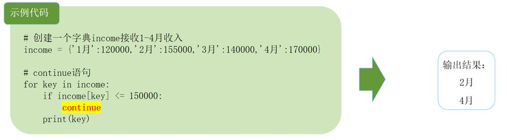

第 1 页 · 4.3.4 break和continue语句
4.3.4 break和continue语句
说明：甲公司1-4月收入分别为12万元、15.5万元、14万元、17万元。
要求：使用for循环与break语句筛选出收入额在15万元以上的第一个月份。

第 2 页 · 4.3.4 break和continue语句
4.3.4 break和continue语句
甲公司1-4月收入分别为12万元、15.5万元、14万元、17万元。
要求：使用for循环与continue语句筛选出收入额在15万元以上的所有月份。

第 3 页 · 4.4 例题讲解
4.4 例题讲解
例1：计算1+2+3+…+100的值。
s = 0
for i in range(1,101):
s = s + i
print('1+2+3+…+100 = ', s)
print('1+2+3+…+100 = ', sum(range(1,101)))
第 4 页 · 4.4 例题讲解
4.4 例题讲解
例2：输出序列中的元素。
a_list = ['a', 'b', 'mpilgrim', 'z', 'example']
for i, v in enumerate(a_list):
print('列表的第', i+1, '个元素是：', v)
第 5 页 · 4.4 例题讲解
4.4 例题讲解
例3：求1-100之间能被7整除，但不能同时被5整除的所有整数。
for i in range(1,101):
if i%7 == 0 and i%5 != 0:
print(i)
for num in range(7, 101, 7):
if num%5 != 0:
print(num)
第 6 页 · 4.4 例题讲解
4.4 例题讲解
例4：统计考试成绩中优、良、中、及格、不及格的人数。
scores = [89,70,49,87,92,84,73,71,78,81,90,37,
77,82,81,79,80,82,75,90,54,80,70,68,61]
groups = {'优秀':0, '良':0, '中':0, '及格':0, '不及格':0}
for score in scores:
if score>=90:
groups['优秀'] = groups['优秀']+1
elif score>=80:
groups['良'] = groups['良']+1
elif score>=70:
groups['中'] = groups['中']+1
elif score>=60:
groups['及格'] = groups['及格']+1
else:
groups['不及格'] = groups['不及格']+1
print(groups)
第 7 页 · 4.4 例题讲解
4.4 例题讲解
例5：求200以内能被17整除的最大正整数。
for i in range(200,0,-1):
if i%17 == 0:
print(i)
break
第 8 页 · 课后作业
课后作业
要求：分别利用while循环和for循环求0-100中的偶数和。